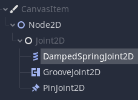

Немного вернёмся в прошлое, и обратимся к предыдущему проекту для исследования.
В коде пули к нашему RigidBody2D применяется apply_impulse() - давайте поговорим немного о импульсах. Дело в том, что RigidBody использует физику движка, и в этом есть некоторая проблема - при применении поворотов, илбо ручном изменении позиции тела в пространстве мы можем столкнуться с проблемой - тело на доли секунды будет изменяться, а после возвращаться на место. Дело здесь в том, что при действии на тело некоторых сил физического движка оно старается подчиняться физическим модификациям, игнорируя явные преобразования. Для возможности избегания такого бага разработчиками были определены некоторые методы воздействий, а именно:
Из постоянно действующих сил у нас есть такие замечательные штуки, как add_force(), и add_torque(). Они обозначают какую-то постоянно прикладываемую силу к объекту в пространстве. Так, например, одной из постоянных сил является гравитация. Точно так же, если Вам необходимо сделать действие ветра на протяжённости всей локации - достаточно каждому объекту RigidBody задавать add_force() с определённым направлением силы, и делать это необходимо всего один раз. В дальнейшем такая сила будет действовать постоянно. ТО же самое относится и к add_torque(), однако он служит уже для поворота (например тело, помещённое в центр урагана, будет испытывать постоянную поворотную силу).
Что же на счёт импульсов - всё просто. Когда Вы играете в бильярд, ударяя по мячу вы единоразово придаёте ему импульс, который толкает мяч в определённом направлении. То есть импульс - это единоразовое воздействие какой-либо силы на некоторое тело. У нас их также три типа:
Что же до внедрения физики - здесь не совсем всё просто. Как уже говорилось - прямое изменение поворота, положенния, применяемых сил и т.д. может повлечь за собой неприятные артефакты. Для подобных операций следует пользоваться обратным вызовом метода _integrate_forces() вместо _physics_process(). Это позволит безопасно применить к телу некоторые трансформации. Так, например, в следующем коде мы изменяем свойство, отвечающее за поворот объекта, но вручную таким образом, чтобы физика ничего не заподозрила (обмануть физику - Вы ведь всегда об этом мечтали?😉):
extends RigidBody2D
var thrust = Vector2(0, 250)
var torque = 20000
func _integrate_forces(state):
if Input.is_action_pressed("ui_up"):
applied_force = thrust.rotated(rotation)
else:
applied_force = Vector2()
var rotation_dir = 0
if Input.is_action_pressed("ui_right"):
rotation_dir += 1
if Input.is_action_pressed("ui_left"):
rotation_dir -= 1
applied_torque = rotation_dir * torque
Также я хотел бы обратить Ваше внимание на то, что в инспекторе узла RigidBody есть некоторый параметр, который называется mode - он отвечает за поведение данного узла. Так что, если Вы желаете вклинивать свою физику непосредственно на долгое время - имеет смысл переключать эти состояния узла в требуемый Вам, а после возвращать при необходимости обратно, возвращая телу физику физического движка. Это можно сделать как в инспекторе, изменяя свойство mode, так и в коде при помощи mode:
mode = RigidBody2D.MODE_CHARACTER
mode = RigidBody2D.MODE_STATIC
mode = RigidBody2D.MODE_KINEMATIC
mode = RigidBody2D.MODE_RIGID
Для чего нам эта информация? Всё дело в том, что при создании пули мы использовали отдачу импульса - фактически толчок. Но что будет, если мы сделаем круглый предмет, и дадим ему поворотный импульс? И тут Вы наверняка уже обо всём догадались - в соответствии с физическими законами (а в большинстве своём физические движки пытаются частично реализовать реалистичную физику), если мы возьмём в расчёт силу трения, то она будет некоторым упором для круглого крутящегося предмета - он покатится. Но ещё интересней будет, если мы твёрдо прикрепим круглое тело к некоторому другому телу, как колёса автомобиля. В таком случае, получается, круглый предмет будет платформой для этого тела, и будет своей физикой взаимодействовать с ним.
Вы когда-нибудь играли в "Hill Climb Racing"? Можем попробовать сделать нечто похожее, и для этого необходимо создать новый проект, и при помощи SmartShape2D создать некоторый трек - дорожку, по которой будет ехать автомобиль. Установите плагин SmartShape2D, и создайте такой трек для автомобиля (!!!ЗДЕСЬ!!! доступна документация). Не забудьте после создания трека добавить к описанной фигуре твёрдое тело, нажав на кнопку:
Создадим новую сцену, выбираем "Другой узел", тип узла - RigidBody2D. Перетаскиваем в него спрайт машинки, выравниваем по центру, и создадим для него CollisionPolygon2D. После добавления CollisionPolygon2D он сразу находится в режиме разметки полигона - просто кликайте мышью во вьюпорте обводя машинку по контуру. При клике на первую поставленную точку контур замкнётся - полигон будет создан (После создания полигон будет раскрашен разными цветами - это обозначения соединения точек. Если он не раскрасился, то с геометрией полигона есть некоторые проблемы - попробуйте создать заново и нарисовать контур более просто. Не рисуйте слишком сложных контуров - каждая точка является дополнительным рассчётом для компьютера, что естественно сказывается на производительности. Можно создать такое огромное количество точек полигона, что игра начнёт тормозить, просто пытаясь рассчитать каждую точку). Также, в инспекторе свойств узла RigidBody2D задайте свойство "GravityScale" на 30. Дело в том, что сейчас машинка падает медленно - нам необходимо ускорить падение, чтобы машина в дальнейшем лучше вставала на колёса и была более послушной.
После создания тела машины необходимо создать колёса. Просто создайте новую сцену с типом RigidBody2D, добавьте в центр спрайт колеса, и CollisionShape2D с фигурой круга в качестве коллизии этого колеса. Сохраните сцену как "wheel.tscn", и вернитесь обратно к сцене с машиной.
Далее созданные колёса необходимо к ней привязать. Для разного рода физических прикреплений у нас есть три узла:
В случае работы с 3д пространством у нас есть узел VehicleBody, симулирующий поведение тела автомобиля, а так же для прикрепления к нему колёс есть VehicleWheel - узел, который симулирует поведение колеса. Это наиболее рекомендуемый вариант для создания автомобиля, однако ничего не может Вам помешать использовать пинджойнты для реализации собственной физики автомобиля.
К нашему автомобилю необходимо добавить два узла типа PinJoint2D. У PinJoint2D в инспекторе свойств есть два интересных свойства - "Node A" (тело, к которому привязываем), и "Node B" (тело, которое привязываем). В них необходимо поместить по полесу, и расположить их соответствующим образом. Сохраним сцену с машинкой, добавим сцену с машинкой на игровое поле и проверим, как она себя ведёт на трассе.
После запуска машинка просто упала на трек, и встала камнем. Так не пойдёт! Пойдём в сцену машинки, и отредактируем пинджойнты должным образом, задав им в инспекторе свойств параметр Softness больше нуля - позже его можно будет подстроить, чтобы машинка себя чувствовала на дороге лучше. Softness отвечает за жёсткость привязывания. Тем самым мы немного смягчаем привязку колеса таким образом, чтобы оно могло немного откланяться от точки привязки.
Остался ещё один вопрос - коллизии. Нам необходимо обозначить коллизии для машины и колёс таким образом, чтобы они не сталкивались. По умолчанию все создаваемые тела создаются на первом слое, и сталкиваются с первым слоем. Нас это вполне устроит, если мы просто переместим машину и колёса на второй слой в слоях, убрав у них первый слой - так они будут и дальше продолжать сталкиваться с первым слоем, так как он указан в маске, но не будут контактировать сами с собой, так как в маске столкновений второй слой отключен. И, чтобы обозначить что это игрок - перейдите в сигналы, и там Вы увидите ещё одну дополнительную вкладку - группы. Группы сделаны для того, чтобы можно было группировать определённые элементы, и, в дальнейшем взаимодействовать целиком с группой определённым образом. Задайте колёсам и машинке группу "player". Колёсам также задайте группу "wheels".
Для чего это нужно: Ранее мы для проверки столкновения использовали принадлежность узла определённому виду. То есть, мы писали такой код - if body is RigidBody2D. Такая проверка имеет место быть, однако если мы создадим другие узлы с таким типом, которые не будут реализовывать определённый шаблон, то мы наткнёмся на ошибки, и придётся эти ошибки как-то трудоёмко исполнять. Для того, чтобы избежать подобных проблем, в Godot существует система групп. В случае с группами мы можем узлы привязать к определённым группам, и в таком случае требуемые объекты можно будет проверять через body.is_in_group(groupname). В дальнейшем мы этим воспользуемся, но пока доделаем машинку.
Теперь перейдём к кодированию машины. Заходим в сцену с машинкой, и прикрепляем к ней скрипт. Что является удивительным - так как у нас все объекты, которые мы используем, подчиняются физике, то мы эту физику можем использовать! Для начала укажем некоторую скорость, и найдём колёса машинки:
extends RigidBody2D
var wheels = []
var speed = 40000
var max_speed = 50 # у машинки должна быть какая-то максимальная скорость
# Called when the node enters the scene tree for the first time.
func _ready():
wheels = get_tree().get_nodes_in_group("wheels") # Получаем колёса в список
А далее мы воспользуемся интересным лайфхаком - мы предоставим колёсам крутящий момент (на самом деле, в прямом слысле слов torque переводится как "крутящий момент")! При этом необходимо указать машинке возможную максимальную скорость.
func _physics_process(delta):
if Input.is_action_pressed("ui_right"):
for wheel in wheels: # Проходимся по каждому колесу из списка
wheel.apply_torque_impulse(speed * delta)
Вот мы и воспользовались apply_torque_impulce()! Он не толкает колёса вперёд, он заставляет колёса поворачиваться в определённую сторону. Таким образом чтобы колесу повернуться - ему необходимо сместиться относительно объекта, на котором оно стоит, к которому оно примыкает.
Ну и не забудьте, что машина в воздухе неуправляемая. То есть, Вам ещё в дальнейшем будет необходимо будет применить torque к машинке.
Теперь мы создадим монетки - познаем силу Area2D. Создайте новую сцену с типом узла Area2D. Добавьте в него спрайт монетки, и коллизию в виде круга. Для монетки, в качестве маски коллизий, надо указать вторую маску - чтобы она могла сталкиваться с машинкой. Опишем скрипт для Area2D, в котором она могла бы определять столкновение с машинкой, и реагировать на это должным образом.
Поднятие монетки мы организовали, и теперь Вы, обратившись к предыдущим частям курса, должны сделать следующее: Реализовать систему набора очков и их отображение в игровом пространстве. Самостоятельно добавить камеру к автомобилю указав её в качестве камеры по умолчанию (да, неудобно, когда машинка уезжает за экран - исправляем!) Добавить небольшое звуковое сопровождение игровых событий. Машинка не может ехать бесконечно - пользователь должен иметь возможность проиграть деньги, коня, машину, дом... Добавьте машинке подлое топливо, которое может заканчиваться. Добавим пользователю больше разочарований в жизни - при помощи Area2D реализуйте проигрыш пользователя, если тот перевернулся на крышу. Отфильтруйте прикосновения по группам таким образом, чтобы при соприкосновении с объектом из группы монеток пользователь не умирал.